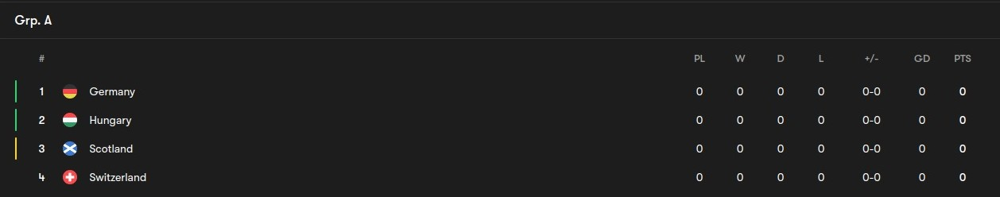

Group A Review
Table of Contents
Group Review - Group A

The host group. Honestly, if you really look deeper it really isn’t a plain sailing group for the Germans. Because almost every opponent here can be a potential banana skin. Let’s get into each one and who I think can go through.
Germany
The hosts who have been boosted by Toni Kroos’ sensational return to international duty post his retirement with Real Madrid after he signed it off with yet ANOTHER Champions League will be really good and they’ve got capable talent in experience and also youngsters. You’ve got the likes of Sane, Gundogan, Kimmich in the experience corner and you’ve got Musiala, Wirtz, Beier in the youngster corner. They have the capability to get out of this group but they’ve got to stand tall and avoid the mistakes which they made in the World Cup which led to them going out. I think I still back them to finish at the top because you’ve got really good in form players that it would be a huge surprise if they don’t
Hungary
Very well known from the last Euros for being well organized and very troublesome to break down. You can find that rant right here 😅. You’ve got the experienced heads with the likes of Gulácsi(GK) and Orban(CB) and really good talents with Kerkez(LB who’s done well this season in the Premier League and is linked with a move) and Szoboszlai who actually missed that Euros tournament back then but now he’s back. They will be ready to frustrate the heck out of everyone they face for sure. It’s hard to say where they could finish in all honesty but I think that final 2nd spot is between them and Switzerland
Switzerland
You’ve got another solid squad here with Shaqiri(Whose wham thighs are built for the Euros honestly 😆), Xhaka who’s coming off the back of an invincible double with Bayer Leverkusen and other experienced heads like Sommer, Ricardo Rodriguez, Zuber and also Freuler who plays for Nottingham Forest. You’ve also got good up and comers in Okafor and Amdouni as well in the frontline. They’re a wildcard but I think they can sneak that 2nd spot
Scotland
These guys are an enigma to be very honest. They’ve got really good talent of course with the likes of Tierney, Robertson, Mctominay(As much he ain’t good enough for United I’ll admit he saved our bacon a good few times last season), McGinn, Gilmour and also a capable goalie in Gunn(The amount of times he frustrated me in FM24 I swear 😭. He’s not that great but he’s ok enough to hang on you could say). They’ve got a system where in attack they push so many numbers up and looking at them I can see how Mctominay profits from that with the goals he score being primarily because of that. As much as they can do that I think they just pip Hungary to best 3rd place team but I think it’ll be very close or Hungary could hold on and win if Szoboszlai can actually fire even better than what he did for Liverpool.
My picks 1-4
- Germany
- Hungary
- Scotland
- Switzerland
1st is the only nailed on one I can see happening. The rest of it can go ANY possible way. Let’s see what happens.